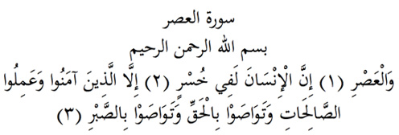

3

Asr Suresi
Anlamı: Er-Rahman, er-Rahim Allah’ın adıyla
Asra yemin olsun ki (1), insan ziyandadır. (2).
Ancak imanı seçenler, salih amelleri yapanlar, birbirlerine Hakkı öğütleyenler, sabrı öğütleyenler müstesna. (3)
Açıklama: Asr; yüz yıllık bir süre olduğu gibi, bir nesillik süre, günün ikindi vakti, gece ile gündüz, Dünyanın zamanına göre ikindi vakti, ikindi namazı, her bir insanın kendi ömrü ve mutlak zaman anlamlarına da gelir. Burada Allah’ın hangisini kastettiğini biz bilemeyiz. Ama bütün dünya zamanına göre insanların çoğunun ziyan ettiğine bakılırsa, burada bütün bir zamana, ya da insanın kendi ömrüne yemin edilmiş olması daha uygun düşer. Sanki zamanın kanunu hep bu olagelmiştir, insanlar en büyük sermayeleri olan ömürlerini ziyanla geçirirler (Şankıtî) deniyor gibidir.
Salih, uygun ve elverişli; amel de iş, eylem demektir. Bu iki kelime Kuranı Kerimde birlikte kullanıldığında bir deyim oluştururlar: Ameli Salih, ya da Salih amel. Uygun olan iş demektir. Buna göre salih amel’; mümin insanın, Allah’ın kitabına uygun ve onun rızası için yaptığı her iştir. ( Şankıtî). Kısaca Allah’ ın istediği işleri, onun istediği gibi yapmak, salih amel yapmaktır. Bu elbette insanın her konumunda Allah’ ın ondan neyi ve nasıl istediğini bilmesini gerektirir. İmam Rabbanî, «Salih amellerin başında beş vakit namaz gelir» der.
Hak Allah’tır. Ama O muradını bize Kuranı Kerimle bildirmiştir. Dolayısıyla her işlerinde birbirlerine Kuran’ın hükümlerini öğütleyenler Hakk’ı öğütlemiş olurlar. Bunda sebatı ve bundan ayrılmamayı öğütleyenler de sabrı öğütlemiş olurlar. (Şankıtî)
İmam Şafiî der ki, insanlar düşünseler sadece bu sure bile ona yeter. Çünkü insanı olgunluğa ulaştıracak mertebeler dörttür: Hakkı bilmek, onu uygulamak, bilmeyenlere öğretmek ve bu yolda çekilecek sıkıntılara sabretmek. İşte bu surede Allah bu mertebelerin hepsini saymıştır. (Kasimî).